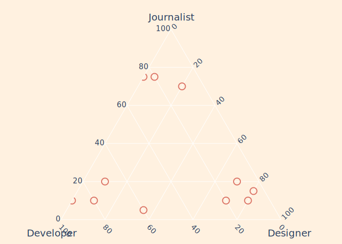
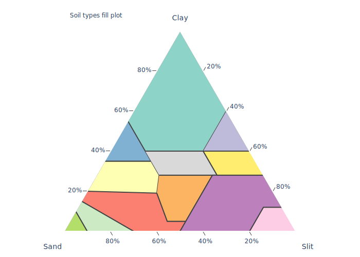

using PlotlyJS, JSON
function ternary_markers()
function make_ax(title, tickangle)
attr(title=title, titlefont_size=20, tickangle=tickangle,
tickfont_size=15, tickcolor="rgba(0, 0, 0, 0)", ticklen=5,
showline=true, showgrid=true)
end
raw_data = [
Dict(:journalist=>75, :developer=>:25, :designer=>0, :label=>"point 1"),
Dict(:journalist=>70, :developer=>:10, :designer=>20, :label=>"point 2"),
Dict(:journalist=>75, :developer=>:20, :designer=>5, :label=>"point 3"),
Dict(:journalist=>5, :developer=>:60, :designer=>35, :label=>"point 4"),
Dict(:journalist=>10, :developer=>:80, :designer=>10, :label=>"point 5"),
Dict(:journalist=>10, :developer=>:90, :designer=>0, :label=>"point 6"),
Dict(:journalist=>20, :developer=>:70, :designer=>10, :label=>"point 7"),
Dict(:journalist=>10, :developer=>:20, :designer=>70, :label=>"point 8"),
Dict(:journalist=>15, :developer=>:5, :designer=>80, :label=>"point 9"),
Dict(:journalist=>10, :developer=>:10, :designer=>80, :label=>"point 10"),
Dict(:journalist=>20, :developer=>:10, :designer=>70, :label=>"point 11")
]
t = scatterternary(
mode="markers",
a=[_x[:journalist] for _x in raw_data],
b=[_x[:developer] for _x in raw_data],
c=[_x[:designer] for _x in raw_data],
text=[_x[:label] for _x in raw_data],
marker=attr(symbol=100, color="#DB7365", size=14, line_width=2)
)
layout = Layout(
ternary=attr(
sum=100,
aaxis=make_ax("Journalist", 0),
baxis=make_ax("Developer", 45),
caxis=make_ax("Designer", -45),
bgcolor="#fff1e0",
), annotations=attr(
showarrow=false,
text="Replica of Tom Pearson's block",
x=1.0, y=1.3, font_size=15
),
paper_bgcolor="#fff1e0"
)
plot(t, layout)
end
ternary_markers()
function filled_ternary()
function make_ax(title)
attr(
title=title,
ticksuffix="%",
min=0.01,
linewidth=2,
ticks="outside",
ticklen=8,
showgrid=true
)
end
fn = tempname()
download("https://gist.githubusercontent.com/davenquinn/988167471993bc2ece29/raw/f38d9cb3dd86e315e237fde5d65e185c39c931c2/data.json", fn)
raw_data = JSON.parsefile(fn)
rm(fn)
colors = [
"#8dd3c7",
"#ffffb3",
"#bebada",
"#fb8072",
"#80b1d3",
"#fdb462",
"#b3de69",
"#fccde5",
"#d9d9d9",
"#bc80bd",
"#ccebc5",
"#ffed6f"
]
traces = Array{GenericTrace,1}(undef, length(raw_data))
for (i, (k, v)) in enumerate(raw_data)
traces[i] = scatterternary(mode="lines", name=k,
a=[_x["clay"] for _x in v],
b=[_x["sand"] for _x in v],
c=[_x["silt"] for _x in v],
line_color="#444",
fill="toself",
fillcolor=colors[i],
hoveron="fills+points"
)
end
layout = Layout(
ternary=attr(
sum=100,
aaxis=make_ax("Clay"),
baxis=make_ax("Sand"),
caxis=make_ax("Slit")),
showlegend=false,
width=700,
annotations=[attr(
showarrow=false, x=0.15, y=1.1, text="Soil types fill plot"
)]
)
plot(traces, layout)
end
filled_ternary()
